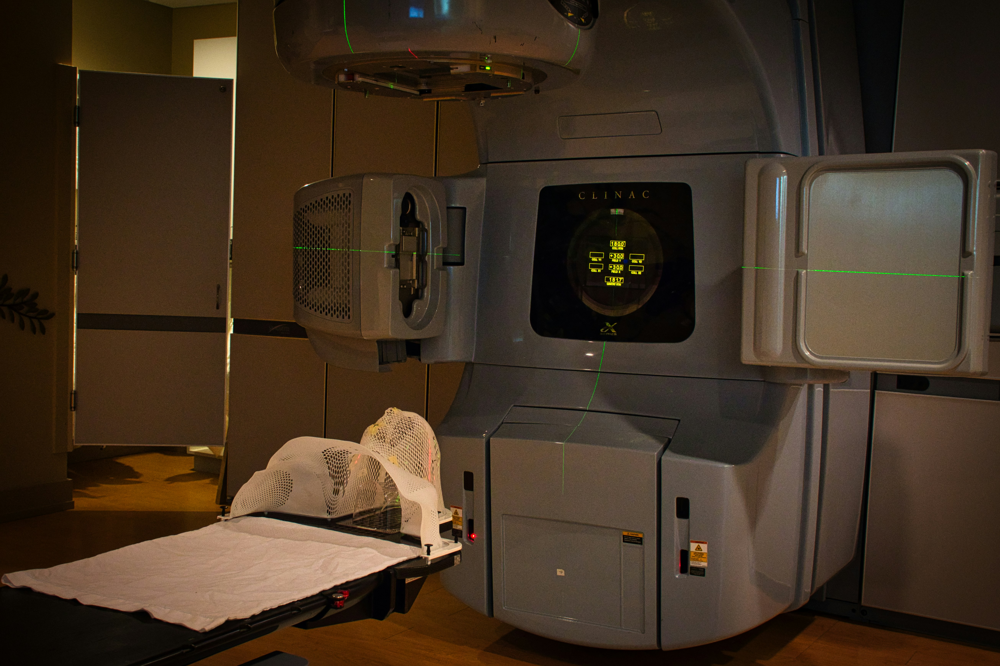

Applications

AI-Powered Diagnostic
AI-driven diagnostic tools are transforming how diseases are detected and treated. By analyzing vast amounts of medical data, these systems help healthcare providers make quicker, more accurate decisions.
How it Works:
Key Benefits:
Impact:

Robot Surgery Assistance
Robotic surgery systems enhance surgeons’ abilities, making operations safer, less invasive, and more precise.
How it Works:
Key Benefits:
Impact:

Smart Patient Monitoring
Wearable devices and AI platforms monitor patients continuously, enabling proactive rather than reactive care.
How it Works:
Key Benefits:
Impact:

Telemedicine Automation
Telemedicine powered by AI expands access to healthcare worldwide by streamlining virtual consultations and administrative tasks.
How it Works:
Key Benefits:
Impact:

AI-Enhanced Medical Imaging
AI is revolutionizing radiology by enhancing the speed and accuracy of medical imaging analysis. It assists radiologists in detecting subtle anomalies that may otherwise be overlooked.
How it Works:
Key Benefits:
Impact:
Automated Administrative Support
AI and automation reduce the administrative burden in healthcare, giving providers more time for direct patient care.
How it Works:
Key Benefits:
Impact:
Interactive Health Timeline
Explore how AI innovations have transformed healthcare through the years.
2015 — Early AI Diagnostics
AI began assisting radiologists in identifying tumors and fractures faster and more accurately.
2018 — Rise of Robotic Surgery
AI-driven robotic systems enabled minimally invasive operations, improving patient recovery times.
2020 — Telemedicine Expansion
AI chatbots and automation made virtual healthcare accessible globally during the pandemic.
2023 — Predictive Patient Monitoring
Wearable AI devices started predicting health issues before symptoms appeared, enabling preventive care.
2025 — Smart Healthcare Integration
Comprehensive AI systems now combine diagnostics, telemedicine, and analytics for personalized care.